5.1 Bagged trees
The {baguette} package, part of the {tidymodels} metapackage, provides an interface for bagging in R. It is not part of the core set of packages, implying it is installed with {tidymodels} but not loaded. You must load {baguette} outside of your call to {tidymodels} (i.e., similar to the {lubridate} package in the {tidyverse}).
Recall our best model when fitting a decision tree in the previous chapter had an average AUC across folds of \(0.825\). This included a very low cost complexity parameter of \(0.0000000001\) and a minimum \(n\) for our terminal nodes of 35. Can we improve performance from this model when using bagging? Let’s try!
First, we need to load the data, create a split training/test set, pull the training data, and create a \(k\)-fold cross-validation dataset. Some of the models we’ll be working with cannot handle missingness on the outcome, so we’ll remove these rows upon reading the data into R.
library(tidyverse)
library(tidymodels)
k_train <- read_csv(
here::here("data", "ds-bowl-2019.csv"),
col_types = cols(.default = col_guess(),
accuracy_group = readr::col_factor(levels = as.character(0:3),
ordered = TRUE))
) %>%
drop_na(accuracy_group)
splt <- initial_split(k_train)
train <- training(splt)
cv <- vfold_cv(train)Next, we’ll specify a basic recipe that just specifies the model formula.
And now we’re ready to specify our model. This is pretty much the same as before, except now we are going to load the {baguette} package in addition to {tidymodels} and use bag_tree() instead of decision_tree(). Additionally, we’ll specify a times argument when we set the engine. Let’s start by fitting a model to 50 bootstrap resamples and aggregating the results across all 50 trees. The rest is the same as before.
Let’s start by by building a very deep tree, with no pruning and a minimum sample size for the terminal nodes of 2. We’ll also use parallel processing here via the {future} package to help the model run faster. The code below also includes timings via teh {tictoc} package.
library(baguette)
library(tictoc)
# set model
bt_mod <- bag_tree() %>%
set_engine("rpart", times = 50) %>%
set_mode("classification") %>%
set_args(cost_complexity = 0,
min_n = 2)
# fit to $k$ folds
tic()
bt_fit1 <- fit_resamples(bt_mod,
preprocessor = rec,
resamples = cv)
toc(log = TRUE) # `log = TRUE` so I can refer to this timing later## 515.35 sec elapsed## # A tibble: 2 x 5
## .metric .estimator mean n std_err
## <chr> <chr> <dbl> <int> <dbl>
## 1 accuracy multiclass 0.656 10 0.00906
## 2 roc_auc hand_till 0.840 10 0.00622That’s a pretty decent gain! But how do we know that 50 bags is enough? We can create a learning curve by fitting our model to many different bootstrap resample values, and evaluate the objective function for each of these values. To do that, let’s write a function that specifies a model with any bootstrap value, \(b\), fits the model, and then extracts the AUC.
Remember, we only need to find the value where our objective function stablizes. Adding additional bootstrap resamples won’t hurt in terms of model performance, but it will cost us in terms of computational time. So we want to use a value of \(b\) that is around the lowest possible value once stability has been reached (so we don’t waste computational time).
When we fit the model above, we used fit_resamples() using 10-fold cross validation. This time, we only want to get a rough estimate of model stability. So, to save on computation time, let’s create a small cv object with just two folds, then use this to fit all the \(b\) candidate models.
# specify a small cv
small_cv <- vfold_cv(train, v = 2)
pull_auc <- function(b) {
# specify model
mod <- bag_tree() %>%
set_mode("classification") %>%
set_args(cost_complexity = 0, min_n = 2) %>%
set_engine("rpart", times = b)
# fit model to full training dataset
m <- fit_resamples(mod, rec, small_cv)
# extract the AUC & add the $b$ value
auc <- show_best(m, "roc_auc")
auc$b <- b
# return the AUC data frame
auc
}Now we just need to specify a vector of candidate bags, \(b\), and loop our function through this vector. We’ll look at values between \(5\) and \(305\) by increments of 25. Note that we have used parallel processing here again to help speed things along. This is still a pretty time-intensive operation. As the timings below indicate, it took a pretty decent amount of time to run for us (we’ll talk about more efficient ways to do this in the next section).
# specify candidate b models
b <- seq(5, 305, 25)
# Fit models
library(future)
plan(multisession)
tic()
aucs <- map_df(b, pull_auc)
toc()## 329.361 sec elapsedLet’s plot these samples now to see when we reach stability. Note

And it looks like after about 150 bags the model becomes stable.
Moving forward, we could proceed with model tuning just as we did before, using \(k\)-fold cross validation, and using a bagged tree model with \(b = 150\). However, as the process above illustrates, this can be a highly computationally intensive process. We would need to fit decision trees to each of 200 bootstrap resamples, for each of the \(k\) folds for every hyperparameter we evaluated. In the Decision Trees chapter, we evaluated 50 hyperparamters in our initial model tuning (10 for cost complexity and 5 for the minimum \(n\) size for a terminal node). Assuming 10-fold cross-validation, this would result in \(50 \times 10 \times 150 = 75000\) decision trees! That’s going to take a long time. Luckily, there are alternative options.
5.1.1 Working with out of bag samples
Recall from our chapter on cross-validation procedures that there are multiple approaches to cross-validation, including bootstrap resampling. When using boostrap resampling for cross-validation, we fit a candidate model on the boostrapped data, and evaluate it against the cases that were not included in the bootstrap. For example, if our data looked like this:
## letters score
## 1 a 5
## 2 b 7
## 3 c 2
## 4 d 4
## 5 e 9and our bootstrap resample looked like this
## letters score
## 3 c 2
## 1 a 5
## 1.1 a 5
## 3.1 c 2
## 4 d 4Then we would fit our model to letters a, b, and e, and evaluate our model by making predictions for letters c and d.
If you’re using bagging to develop a model, you already have bootstrap resamples. The out-of-bag (OOB) samples are then “free”, computationally. If your sample size is reasonably large (\(n > 1000\)) the OOB estimates of model performance will be similar to those obtained from \(k\)-fold CV, but take only a fraction of the time.
Unfortunately, as of the time of this writing, there is no way to easily access the OOB samples with {baguette}. Luckily, we can fit the model in a slightly different way, using the {ranger} package, and this will allow us to access the OOB samples.
In what follows, we’ll use {ranger} within a {tidymodels} framework to fit and tune a bagged tree model using the OOB samples. The {ranger} package is designed to fit random forests, which we’ll talk about next. Bagged trees, however, are just a special case of random forests where there is no sampling of columns when each tree is built (more on this soon). To fit a bagged tree with {ranger}, we just have to set the mtry argument equal to the number of predictors in our data frame.
Let’s start by re-fitting our bt_mod1 model with {ranger}, using the OOB samples for our model performance. To do this, we’re going to use the fit() function, instead of fit_resamples() (because we’re only going to be fitting the model once). We will therefore need to prep() and bake() our recipe to get our processed training data.
## # A tibble: 2,767 x 6
## event_count event_code game_time title world accuracy_group
## <dbl> <dbl> <dbl> <fct> <fct> <ord>
## 1 1 2000 0 Mushroom… TREE… 3
## 2 3 3010 37 Mushroom… TREE… 3
## 3 5 3010 3901 Mushroom… TREE… 3
## 4 10 4025 8400 Mushroom… TREE… 3
## 5 12 3121 8926 Mushroom… TREE… 3
## 6 13 4025 9502 Mushroom… TREE… 3
## 7 16 3121 10210 Mushroom… TREE… 3
## 8 17 2035 10210 Mushroom… TREE… 3
## 9 18 2020 10210 Mushroom… TREE… 3
## 10 20 4070 10543 Mushroom… TREE… 3
## # … with 2,757 more rowsNext, it’s helpful to determine the number of predictors we have with code. In this case, it’s fairly straightforward, but occassionally things like dummy-coding can lead to many new columns, and zero or near-zero variance filters may remove columns, so it’s worth double-checking our assumptions.
## [1] 5Note that we subtract one from the number of columns because we are only counting predictors (not the outcome).
Next, we specify the model. Notice we use rand_forest() here for our model, even though we’re actually fitting a bagged tree, and we set mtry = 5. The number of bags is set by the number of trees. Note that, while we found a higher value is likely better, we’ve set the number of trees below to be 50 so the model is comparable to bt_mod. There is no pruning hyperparameter with {ranger}, but we can set the min_n to 2 as we had it before. The below code includes one additional argument that is passed directly to {ranger}, probability = FALSE, which will make the predictions from the model be the actual classes, instead of the probabilities in each class.
bt_mod2 <- rand_forest() %>%
set_engine("ranger") %>%
set_mode("classification") %>%
set_args(mtry = 5,
trees = 50,
min_n = 2,
probability = FALSE)Now we just fit the model to our processed data.
tic()
bt_fit2 <- fit(bt_mod2,
accuracy_group ~ .,
processed_train)
toc(log = TRUE) # `log = TRUE` so I can refer to this timing later## 1.368 sec elapsedAs you can see, we have substantially cut the fitting time down because we’ve only fit the model once. We went from 4.12 minutes to only 0 seconds! But do we get the same estimates for our metrics if we use the OOB samples? Let’s look at the model object
## parsnip model object
##
## Fit time: 265ms
## Ranger result
##
## Call:
## ranger::ranger(x = maybe_data_frame(x), y = y, mtry = min_cols(~5, x), num.trees = ~50, min.node.size = min_rows(~2, x), probability = ~FALSE, num.threads = 1, verbose = FALSE, seed = sample.int(10^5, 1))
##
## Type: Classification
## Number of trees: 50
## Sample size: 2767
## Number of independent variables: 5
## Mtry: 5
## Target node size: 2
## Variable importance mode: none
## Splitrule: gini
## OOB prediction error: 33.25 %This says that our OOB prediction error is 33.25. Our accuracy is one minus this value, or 66.75. Using \(k\)-fold cross validation we estimated our accuracy at 65.63. So we’re getting essentially the exact same results, but in this case using the OOB samples is approximately 123,561 times faster!
What if we want other metrics? We can access the OOB predictions from our model using bt_fit2$fit$predictions. We can then use these predictions to calculate OOB metrics via the {yardstick} package, which is used internally for functions like collect_metrics(). For example, assume we wanted to estimate the OOB AUC. In this case, we would need to re-estimate our model to get the predicted probabilites for each class.
bt_mod3 <- rand_forest() %>%
set_engine("ranger") %>%
set_mode("classification") %>%
set_args(mtry = 5,
trees = 50,
min_n = 2,
probability = TRUE) # this is the default
bt_fit3 <- fit(bt_mod3,
accuracy_group ~ .,
processed_train)Now we just pull the OOB predicted probabilities for each class, and add in the observed class.
preds <- bt_fit3$fit$predictions %>%
as_tibble() %>%
mutate(observed = processed_train$accuracy_group)
preds## # A tibble: 2,767 x 5
## `0` `1` `2` `3` observed
## <dbl> <dbl> <dbl> <dbl> <ord>
## 1 0.354 0 0.260 0.386 3
## 2 0.824 0 0 0.176 3
## 3 0 0 0.929 0.0714 3
## 4 0.406 0 0.344 0.25 3
## 5 0.176 0 0.765 0.0588 3
## 6 0.111 0 0.111 0.778 3
## 7 0.227 0 0 0.773 3
## 8 0.269 0 0.154 0.577 3
## 9 0.312 0 0.125 0.562 3
## 10 0.289 0 0.158 0.553 3
## # … with 2,757 more rowsAnd now we can use this data frame to estimate our AUC, using yardstick::roc_auc().
## # A tibble: 1 x 3
## .metric .estimator .estimate
## <chr> <chr> <dbl>
## 1 roc_auc hand_till 0.843How does this compare to our estimate with 10-fold CV?
## # A tibble: 2 x 5
## .metric .estimator mean n std_err
## <chr> <chr> <dbl> <int> <dbl>
## 1 accuracy multiclass 0.656 10 0.00906
## 2 roc_auc hand_till 0.840 10 0.00622It’s very close and, again, took a fraction of the time.
5.1.2 Tuning with OOB samples
If we want to conduct hyperparameter tuning with a bagged tree model, we have to go to a bit more work, but it’s not too terrible. Let’s train on minimum \(n\) and set the number of trees to be large—say, 200.
Much like we did before, we’ll write a function that fits a model for any min_n value. We’ll optimize our model by trying to maximize AUC, so we’ll have our function return the OOB AUC estimate, along with the \(n\) size that was used for the terminal nodes.
tune_min_n <- function(n) {
mod <- rand_forest() %>%
set_mode("classification") %>%
set_engine("ranger") %>%
set_args(mtry = 5,
min_n = n,
trees = 200)
# fit model to full training dataset
m <- fit(mod, accuracy_group ~ ., processed_train)
# create probabilities dataset
pred_frame <- m$fit$predictions %>%
as_tibble() %>%
mutate(observed = processed_train$accuracy_group)
# calculate auc
auc <- roc_auc(pred_frame, observed, `0`:`3`) %>%
pull(.estimate) # pull just the estimate
# return as a tibble
tibble(auc = auc, min_n = n)
}Now we can loop through a bunch of \(n\) sizes for the terminal nodes and see which provides us the best OOB AUC values for a bagged tree with 200 bags. We’ll use map_df() so the results are bound into a single data frame. Let’s search through values from 2 to 50 and see how the OOB AUC changes.
## 72.686 sec elapsedLet’s plot the learning curve.

Because we are trying to maximize AUC, the ideal value appears to be somewhere around 15. Let’s extract the maximum AUC \(n\).
## # A tibble: 1 x 2
## auc min_n
## <dbl> <int>
## 1 0.859 6And now we’re likely ready to finalize our model. Let’s evaluate it against our test set.
final_mod <- rand_forest() %>%
set_mode("classification") %>%
set_engine("ranger") %>%
set_args(mtry = 5,
min_n = 13,
trees = 200)
final_fit <- last_fit(final_mod, rec, splt)
final_fit$.metrics## [[1]]
## # A tibble: 2 x 3
## .metric .estimator .estimate
## <chr> <chr> <dbl>
## 1 accuracy multiclass 0.680
## 2 roc_auc hand_till 0.871And our final AUC estimate on our test set is essentially equivalent to what we found during training using our OOB samples